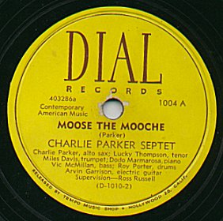

홈 > 브랜드 매거진 > Dial Records
Dial Records
Dial Records은 US record label; specialized first in bebop jazz, then in contemporary classical music입니다.
산업 분야 미디어·엔터테인먼트 · 공개 등급 자료 기반 · 브랜드 평가 4.1 ★


한눈에 보는 브랜드
다이얼 레코드(Dial Records)는 1946년 미국 로스앤젤레스에서 음반 수집가이자 평론가 로스 러셀이 설립한 비밥 재즈 전문 독립 음반사다. 할리우드에서 운영하던 음반점 템포 뮤직 숍을 모태로, 당시 LA에 머물던 알토 색소포니스트 찰리 파커를 녹음하기 위해 출범했다.
첫 전환점은 1946년 파커와의 1년 전속 계약으로 비밥 핵심 레이블로 도약한 것이고, 두 번째 전환점은 1949년 여름 현대 클래식 음악으로 노선을 전환한 것이다. 직원 소수의 소규모 인디 음반사로 약 10년간 존속했다.
브랜드 관점
다이얼의 역사적 의의는 비밥이라는 새 어법이 메이저 음반사 밖에서 살아남던 1940년대 후반, 사보이와 함께 그 흐름을 기록으로 남긴 독립 레이블이라는 점에 있다. 1942~1944년 녹음 금지령으로 상업 음반산업에 공백이 생기자 소규모 레이블들이 그 틈을 메웠고, 다이얼은 그중 가장 적극적으로 비밥을 지지한 축이었다.
차별점은 한 음악가의 창조적 정점을 집중 포착한 카탈로그 전략에 있다. 파커가 다이얼에 남긴 녹음은 한 레이블 단위로는 그의 작업 중 가장 충실한 선집으로 평가된다.
또한 1949년 미국 최초로 쇤베르크를 음반화하고 바르토크, 케이지 등 현대 작곡가로 영역을 넓힌 것은 인디 레이블의 미학적 야심을 보여주는 사례다. 한국 독자에게는 거대 자본 없이도 한 장르의 결정적 순간을 기록해 후대에 정전으로 남긴 큐레이션의 힘을 보여주는 참고점이다.
시작과 성장
제2차 세계대전 종전 직후, 로스 러셀은 1945년 할리우드 대로에 비밥 음반을 파는 템포 뮤직 숍을 열고 재즈 소식지를 발행하며 신음악의 거점을 만들었다. 1946년 그는 마빈 프리먼을 동업자로 두고, 좋아하던 1920년대 문예지의 이름을 따 다이얼 레코드를 세웠다.
직접적 동기는 LA에 와 있던 찰리 파커의 녹음이었다. 첫 전환점은 1946년 2월 파커와의 전속 계약으로, 같은 해 3월 할리우드 라디오 레코더스 세션에서 '오니톨로지', '야드버드 스위트' 등을 남겼다.
7월 29일 '러버 맨' 세션에서는 파커의 건강 악화가 드러났고 이후 그는 입원 치료를 거쳤으며, 회복 후인 1947년 2월 세션에서 '릴랙신 앳 카마릴로' 등을 녹음했다. 두 번째 전환점은 1949년 여름 현대 클래식 노선 전환으로, 바르토크 작품과 파리에서 입수한 쇤베르크 마스터가 그 출발점이 되었다.
브랜드 아이덴티티
다이얼의 정체성은 상업적 안전성보다 동시대 전위 음악의 기록을 우선하는 수집가적 큐레이션에 있다. 평론가 출신 설립자의 안목이 카탈로그 전반을 관통하며, 유행하는 음악보다 음악사적 가치가 높은 순간을 포착하려는 태도가 보이스를 형성한다.
핵심 타깃은 비밥을 알아보던 소수의 안목 있는 청자, 그리고 이후 현대 클래식에 관심을 둔 진지한 감상층이었다. 비밥에서 현대 작곡가 음반으로 옮겨간 행보 자체가, 대중성보다 작품성과 선구성을 가치의 중심에 둔 이 레이블의 일관된 성격을 드러낸다.
제품과 서비스
발매 카탈로그의 중심은 찰리 파커를 비롯한 비밥 78회전 음반으로, 디지 길레스피, 마일스 데이비스, 맥스 로치, 밀트 잭슨, 하워드 맥기, 도도 마마로사, 덱스터 고든, 워델 그레이, 얼 콜먼, 에롤 가너 등의 세션이 포함된다. 1949년 이후로는 쇤베르크, 바르토크, 케이지 등 현대 클래식 음반(현대 클래식 라이브러리 시리즈)으로 장르를 확장했다.
유통 채널은 자사 음반점과 음반 도소매망이었다.
사람들
창업자: Ross Russell
현재 상태
다이얼 레코드는 현재 활동하지 않는 소멸 레이블이다. 로스 러셀은 1954년 6월 자신의 재즈 녹음 마스터와 프레싱 리스트, 로그 시트를 콘서트 홀 레코드 측에 넘겨 카탈로그를 매각했다.
이후 파커의 다이얼 녹음은 영국 스폿라이트 레이블 등을 통해 재발매되었고, 스폿라이트로부터 라이선스를 받은 사업자들이 추가로 복각했다. 현재 마스터 권리의 최종 귀속 주체와 세부 권리관계는 공개된 일관된 정보로 확인되지 않아 미공개로 둔다.
설립자 러셀은 1973년 파커 평전 '버드 라이브스'를 펴냈으나 정확성 논란이 따랐다.
타임라인
BI/CI 변천사
대표 로고대표 브랜드 마크함께 읽을 브랜드
AZ
AZ
미디어·엔터테인먼트 · 디렉토리AZAZ는 프랑스의 미디어·엔터테인먼트 브랜드로, 콘텐츠 포맷, 팬덤, 채널 운영, 지식재산권 확장이 함께 작동하는 영역입니다.
24
2419 Record Label
미디어·엔터테인먼트 · 디렉토리2419 Record Label2419 Record Label는 네덜란드의 미디어·엔터테인먼트 브랜드로, 콘텐츠 포맷, 팬덤, 채널 운영, 지식재산권 확장이 함께 작동하는 영역입니다.
BT
블랙 탑 레코드
미디어·엔터테인먼트 · 디렉토리블랙 탑 레코드블랙 탑 레코드는 미국의 미디어·엔터테인먼트 브랜드로, 콘텐츠 포맷, 팬덤, 채널 운영, 지식재산권 확장이 함께 작동하는 영역입니다.
Am
American Record Company
미디어·엔터테인먼트 · 디렉토리American Record CompanyAmerican Record Company는 미국의 미디어·엔터테인먼트 브랜드로, 콘텐츠 포맷, 팬덤, 채널 운영, 지식재산권 확장이 함께 작동하는 영역입니다.
 미디어·엔터테인먼트 · 디렉토리BIS Records
미디어·엔터테인먼트 · 디렉토리BIS RecordsBIS 레코드(BIS Records)는 1973년 로베르트 폰 바르가 스웨덴에서 설립한 클래식 음반 레이블이다. 잘 녹음되지 않은 레퍼토리를 폭넓게 다뤄 온 클래식...
 미디어·엔터테인먼트 · 디렉토리Yazoo Records
미디어·엔터테인먼트 · 디렉토리Yazoo Records야주 레코드(Yazoo Records)는 1968년 수집가 닉 펄스가 미국에서 설립한 전전(戰前) 블루스 재발매 레이블이다. 1920~30년대 블루스 녹음을 복각해...
0E
0711 엔터테인먼트
미디어·엔터테인먼트 · 디렉토리0711 엔터테인먼트0711 엔터테인먼트는 독일의 미디어·엔터테인먼트 브랜드로, 콘텐츠 포맷, 팬덤, 채널 운영, 지식재산권 확장이 함께 작동하는 영역입니다.
10
105music
미디어·엔터테인먼트 · 디렉토리105music105music는 독일의 미디어·엔터테인먼트 브랜드로, 콘텐츠 포맷, 팬덤, 채널 운영, 지식재산권 확장이 함께 작동하는 영역입니다.